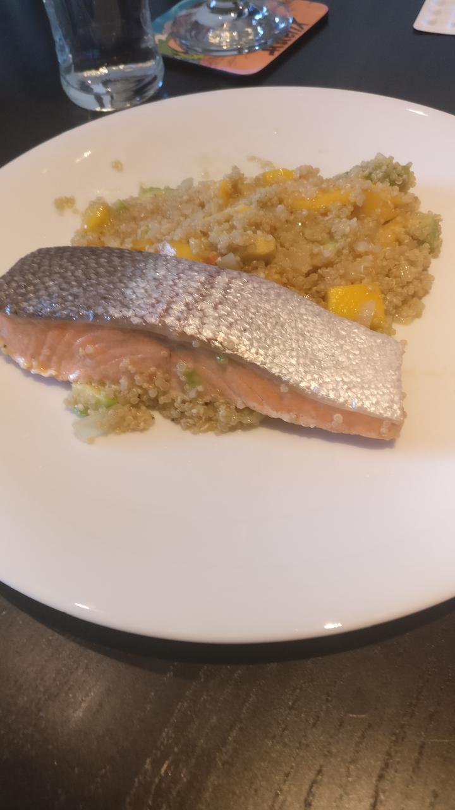

Avocado-Mango-Quinotto mit Lachs
Avocado-Mango Quinotto mit Lachs

Zutaten
- 1 Avocado
- 1 Mango
- 250g Quinoa, 250mL Weißwein, 500ml Gemüsebrühe
- 1- 2 Zwiebeln
- Salz, Pfeffer, Kokos Öl, (Zitronensaft)
- 2 Lachs-Filets
Zubereitung
Avocado, Mango, Zwiebel klein würfeln. Zwiebel in Kokosöl andünsten. Quinoa kurz mit anschwitzen. Mit Weißwein ablöschen. Nach und nach Brühe an- gießen und rühren (ca 15 Minuten). Parallel Lachs z.B. im Dampfgarer (18 Minuten) garen.
Zuletzt Avocado und Mango dazugeben und mit Gewürzen abschmecken.
Lachs und Quinotto auf Teller separat anrichten.